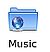
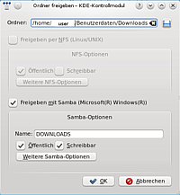
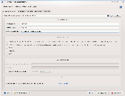
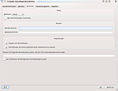

Samba Server KDE
Dieser Artikel wurde für die folgenden Ubuntu-Versionen getestet:
Dieser Artikel ist mit keiner aktuell unterstützten Ubuntu-Version getestet! Bitte diesen Artikel testen und das getestet-Tag entsprechend anpassen.
Zum Verständnis dieses Artikels sind folgende Seiten hilfreich:
Die KDE-Desktopumgebung bietet eine umfangreiche und durchaus mächtige Oberfläche für die Dateifreigabe, mit der neben einem Samba-Server auch ein NFS-Server gesteuert werden kann.
 mit
mit Dateifreigabe aktivieren¶

Bis zur KDE SC Version 4.6 kann man diese sowohl über Dolphin als auch Konqueror durch einen Rechtsklick ( ) auf einen Ordner und dann
) auf einen Ordner und dann
"Eigenschaften -> Freigabe -> Dateifreigabe einrichten"
bzw. über das K-Menü
"Systemeinstellungen -> Erweitert -> System -> Samba"
starten.
Ab Version 4.7 gibt es die GUI in der Systemeinstellung nicht mehr. Die Freigabe erfolgt nur noch über den Dateimanager. Dazu macht man ebenfalls einen Rechtsklick () auf den freizugebenden Ordner und dann
"Eigenschaften -> Freigabe -> Mit Samba freigeben (Microsoft Windows)" aktivieren
Hier können nun sowohl der Name und die Rechte bestimmter Benutzer festgelegt werden, als auch der Gastzugang aktiviert werden.

Freigaben hinzufügen/ändern¶
Hier kann jeder Benutzer über die "Einfache Freigabe" Ordner aus seinem eigenen Homeverzeichnis freigeben, ohne Root-Rechte[2] zu benötigen. Über die "Erweiterte Freigabe" ist es möglich, sämtliche Ordner des Systems freizugeben.
Legt man über "Hinzufügen" eine Freigabe an oder ändert über "Ändern" eine vorhandene Freigabe, so gelangt man in einen einfachen Dialog. Hier lassen sich die wichtigsten Details zur Freigabe festlegen.
| Ordner | Pfad zum Ordner, der freigegeben werden soll |
| Freigaben mit Samba | Der Ordner soll über Samba freigegeben werden |
| Name | Der Name, unter dem die Freigabe erscheint |
| Öffentlich | Auch Gäste dürfen auf die Freigabe zugreifen |
| Schreibbar | Sowohl Lese- als auch Schreibzugriff |
Über die Schaltfläche "Weitere Samba-Optionen" gelangt man in einen umfangreichen Dialog, in dem man so gut wie jedes Detail des Servers konfigurieren kann.
Einfache Freigaben mit net usershare¶
Die Dateimanager Dolphin und Konqueror unter KDE bieten, genau wie Nautilus unter GNOME, einfache Dateifreigaben für Mitglieder der Gruppe "sambashare" an. Diese einfachen Freigaben werden im Ordner /var/lib/samba/usershares/ - anstatt direkt in der Konfigurationsdatei /etc/samba/smb.conf - eingetragen.
Hinweis:
Leider muss derzeit in KDE 4 noch von diesen einfachen Freigaben abgeraten werden, da das dafür verantwortliche Perl-Skript /var/run/fileshareset noch fehlerhaft ist. Das Skript beschwert sich beim Ausführen regelmäßig, dass es nicht mit Root-Rechten ausgeführt wird. Daher ist es ratsam, es einem untergeordnetem Benutzeraccount zuzuordnen.
Außerdem sollte in der Konfigurationsdatei /etc/security/fileshare.conf die Option text RESTRICT=yes gesetzt werden, um Fehlermeldungen im Dateimanager zu vermeiden. Näheres zur fileshareset-Problematik siehe hier  .
.
Wie sich einfache Freigaben mit net usershare auch problemlos per Kommandozeile anlegen lassen, findet man im Artikel net usershare.
Grundsätzliche Konfiguration und allgemeine Freigaben¶
 Wenn der Samba-Server frisch installiert ist, so empfiehlt es sich, zuerst einen Blick in die Konfigurationsoberfläche zu werfen.
In den "Grundeinstellungen" sollte man sicherstellen, dass der Pfad zur smb.conf korrekt ist und den NetBios-Namen, die Serverbezeichnung und die Arbeitsgruppe festlegen. Als Sicherheitsstufe bewährt sich in der Regel "Benutzer". Danach empfiehlt sich ein Blick in den Reiter "Benutzer". Hier muss man den Unix-/Linux-Nutzern, die Ordner freigeben sollen, einen Samba-Nutzer hinzufügen. In der "Freigabe" kann man dann mit "Neue Freigabe hinzufügen..." Ordner freigeben. Der folgende Dialog ermöglicht auch die Namensgebung sowie die Zuweisung von Benutzerrechten für die Freigabe.
Erweiterte Konfiguration des Samba-Servers¶
Unter KDE kann die Konfiguration eines Samba-Servers auch ohne direkten Eingriff in die /etc/samba/smb.conf sehr detailliert vorgenommen werden. Unterschieden wird hier zwischen der erweiterten Konfiguration für den kompletten Server, wie sie im Samba-Kontrollmodul unter "Erweitert" zu finden ist, und der erweiterten Konfiguration, die nur für den jeweils freigegebenen Ordner gilt.
Allgemein¶
Hinweis:
Hier soll nur ein kurzer Überblick gegeben werden über die Möglichkeiten, die KDE 4 zur Konfiguration eines Samba Servers bietet. Diese Optionen werden in der Regel nur von Systemadministratoren benötigt.
Unerfahrenen Anwendern wird empfohlen, diese Einstellungen nicht zu verändern!
Der Reiter "Erweitert" in den Systemeinstellungen von Samba bietet weitreichende Konfigurationsmöglichkeiten für den Server:
| Option | Funktion |
| Sicherheit | Benutzer, Passwörter, Authentifizierungsverfahren |
| Protokollierung | Logdateien und Logging Optionen |
| Feinheiten | Samba Module laden, Zeitintervalle, Prozessanzahl |
| Treiberdateien, Druckerbefehle | |
| Domain | Samba Server in einer Domäne betreiben |
| WINS | Samba als WINS Server einrichten |
| Sperren | Ordner sperren |
| Zeichensatz | Zeichensätze für Linux und Windows(DOS) Welt festlegen |
| Anmeldung | Alles rund um Anmelde- und Abmeldeskripte |
| Socket | Einstellungen für die Serverkommunikation(Paketmanagement) |
| SSL | Verschlüsselung der Verbindung |
| Protokoll | Versionen des smb Protokolls |
| Durchsuchen | Suchoptionen für Samba Freigaben |
| Winbind | Windows Benutzer als Linux Benutzer erscheinen lassen |
| NETBIOS | Konfiguration der NetBIOS Schnittstelle |
| VFS | virtual file system Die Abstraktionsschicht oberhalb der Dateisysteme |
| LDAP | Optionen für das LDAP Protokoll, z.B. um Benutzerdaten zu synchronisieren |
| Befehle | Konsolenbefehle für Freigaben hinzufügen |
| Verschiedenes | Benutzer ausblenden, NIS-Protokoll, UTMP, WTMP |
| Debuggen | Fehlersuche |
Ordnerspezifisch¶
Öffnet man den Button "Weitere Samba Optionen" im Freigabemenü eines einzigen Ordners, so erscheint ein Dialog mit den folgenden 5 Registerkarten, der eine ähnlich detailreiche Konfiguration wie in den Systemeinstellungen plus ein paar ordnerspezifische Feinheiten ermöglicht. Jedoch gelten die hier vorgenommenen Regeln nur für den betreffenden Ordner.
Grundeinstellungen¶
Hier lassen sich Freigabename, Kommentare sowie grundlegende Schreib- und Leserechte bearbeiten. Die aufgeführten Punkte sind abhängig von de vorangehenden Optionen "Öffentlich" und "Schreibbar". Dabei haben die Punkte folgende Bedeutungen:
| Option | Funktion |
| nur lesen | keine Schreibrechte, betrifft alle smb-Nutzer |
| öffentlich | Sehen und Lesen für alle |
| sichtbar | Grundsätzlich für jeden zu sehen, jedoch nicht für jeden zu öffnen |
| verfügbar | Ordnerzugriff möglich, jedoch keine Anzeige in Netzwerkbrowsern |
Benutzer¶
Genauere Schreib/Leserechte können in dieser Registerkarte festgelegt werden. Wählt man hier "Alle nicht spezifizierten Benutzer - Zulassen", so kann grundsätzlich jeder die Freigabe einsehen und nach den in den "Grundeinstellungen" gemachten Einstellungen handeln. Wählt man jedoch "Ablehnen", so kann man über "Spezielle Benutzer" der Freigabe einzelne Nutzer zuweisen, die ausschließlich befugt sind, darauf zuzugreifen und individuelle Schreib/Leserechte haben. Klickt man auf "Benutzer hinzufügen", so können dies Leserechte, Schreibrechte, Administratorrechte (alle möglichen Rechte), aber auch überhaupt keine Rechte sein. Analog kann auch mit Gruppen verfahren werden. Da Samba zwischen Linux-, Samba- und Windows-Nutzern unterscheidet, kann man mit der Option "Für alle Benutzer gilt die Festlegung auf folgenden Benutzer/Gruppennamen" mehreren Samba/Windows-Benutzern in der Tabelle exakt einem Linux-Nutzer bzw. einer Linux-Gruppe zuordnen.
Sicherheit¶
 Hier kann man den Zugriff von außerhalb auf die Freigabe einschränken. So kann man regeln, unter welchem Linux-Benutzer Gäste erscheinen sollen und ob für die Freigabe nur Gastverbindungen erlaubt sind. Genauso kann man hier den Zugriff von nur genannten Rechnern erlauben, aber auch alle Rechner mit einigen definierten Ausnahmen zulassen. Des Weiteren kann erlaubt oder verboten werden, dass auf Bestandteile innerhalb der Ordnerhierarchie der Freigabe Verknüpfungen erstellt werden können. Diese können zusätzlich auf die unter "Benutzer" definierten Anwender beschränkt werden. Auch die Zuweisung eines Passworts für Clients, die sich über die Verknüpfungen ohne Benutzernamen anmelden, ist möglich.
Versteckte Dateien¶
In diesem Reiter kann der Benutzer wählen, ob die in der Freigabe enthaltenen versteckten Dateien auf Linux Ebene für Windows/Samba-Nutzer ausgeblendet werden oder nicht.
Erweitert¶
Der Reiter "Erweitert" bietet eine Fülle von zusätzlichen Ergänzungen, die sich größtenteils aus der Registerkarte "Erweitert" innerhalb der Systemeinstellungen ergeben. Da diese Einstellungen in der Regel nur von Systemadministratoren gebraucht werden, sei dem unerfahrenen Anwender auch hier empfohlen, die Einstellungen so zu belassen, wie sie sind.
Hinweis:
Das im Artikel Samba Server GNOME beschriebene Tool system-config-samba kann auch in KDE verwendet werden. Es ist einfacher zu handhaben, bietet aber auch weniger Optionen als die speziellen KDE-Werkzeuge.
Links¶
Intern¶
Heimnetzwerk - Verschiedene Möglichkeiten, ein kleines privates Netzwerk einzurichten
KDE - Ausführliche Informationen zum gleichnamigen Desktop
Samba - Grundlegende Informationen; dort finden sich auch weitere Links
Samba Server - Weitere Informationen zum Einrichten eines Samba-Servers
Samba Server/smb.conf - Die Konfigurationsdatei eines Samba-Servers (mit Beispielen)
Samba Server/net usershare - Kommandozeilenadministration eines Samba-Servers

- Erstellt mit Inyoka
-
 2004 – 2017 ubuntuusers.de • Einige Rechte vorbehalten
2004 – 2017 ubuntuusers.de • Einige Rechte vorbehalten
Lizenz • Kontakt • Datenschutz • Impressum • Serverstatus -
Serverhousing gespendet von